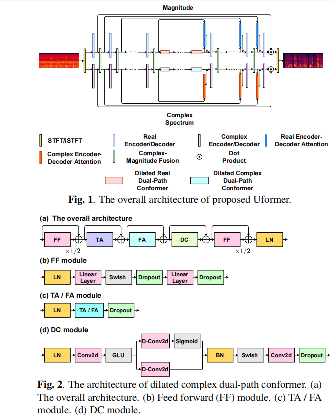

Abstract: Magnitude and complex spectrum are recognized as being two major features of speech enhancement and dereverberation. Traditionally, the focus has always been treating these two features as two different parts, ignoring their underlying relationship. In this paper, we propose Uformer, a Unet based dilated complex real dual-path conformer network in both complex and magnitude domain for simultaneous speech enhancement and dereverberation. We exploit time attention (TA) and dilated convolution (DC) to leverage local and global contextual information and frequency attention (FA) to model dimensional information. These three modules contained in the proposed dilated complex real dual-path conformer module effectively improve the speech enhancement and dereverberation performance. Furthermore, hybrid encoder and decoder are adopted to simultaneously model the complex spectrum and magnitude and promote the information interaction between two domains. Encoder decoder attention is also applied to enhance the interaction between encoder and decoder. Our experimental results outperform all SOTA time domain and complex domain speech front-end models on both objective and subjective performance. Specifically, the proposed method reaches 3.6032 DNSMOS on the blind test set of Interspeech 2021 DNS Challenge. We also carry out ablation experiments to tease apart the proposed modules that are most important.
Uformer Architecture:

Samples:
Noisy
Proposed Uformer
Proposed Uformer(Causal)
Uformer without FA
Uformer without DC
Uformer without encoder decoder attention
Uformer without real valued sub-modules
DCCRN
DCCRN+
SDD-Net